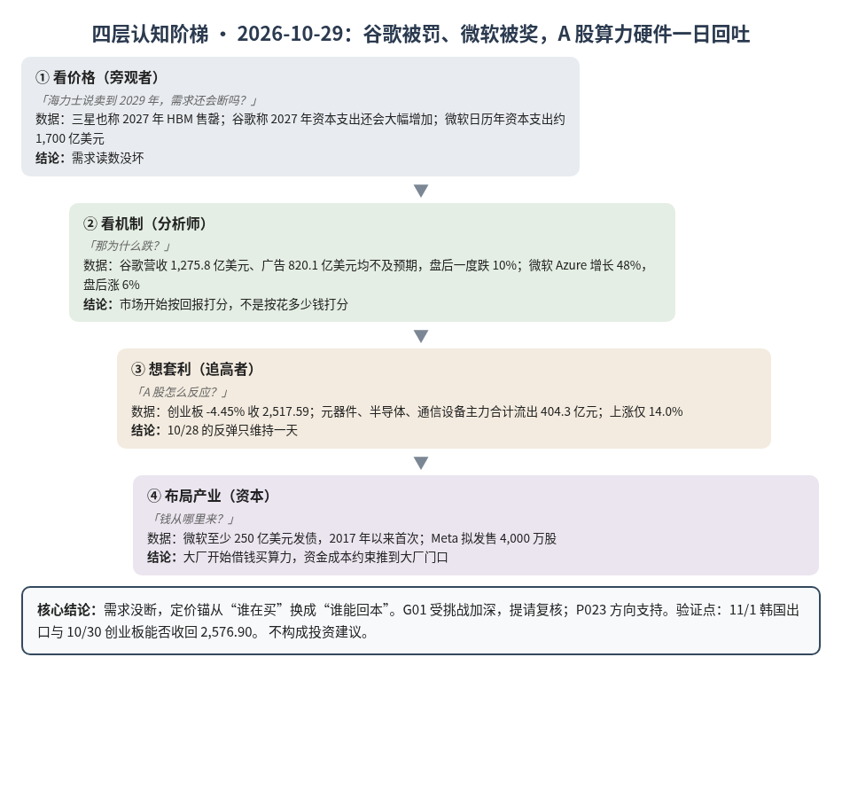
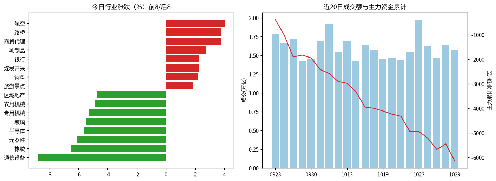
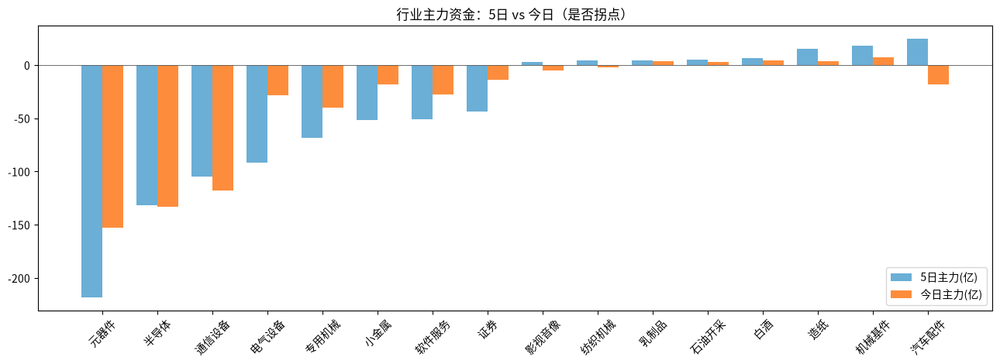

A股投研日报 · 2026-10-29（四层认知版）
- 主线
- 市场开始给 AI 投入"按回报打分"：谷歌被罚、微软被奖，A 股算力硬件回吐
- 最重要变化点
- 创业板 -4.45% 收 2,517.59，跌回 2,576.90 下方；元器件、半导体、通信设备主力合计流出 404.3 亿元；上涨仅 14.0%
- 机制含义
- 需求没断（三星也称 2027 年 HBM 售罄），变的是资金怎么定价：花钱多但收入不及预期的公司被卖，能证明回报的被买
- 下一个观察点
- 11/1 韩国 10 月半导体出口同比：> +150% 则 P001 命中；低于 +100% 说明需求端开始降温
本报告为基于公开数据的研究分析，不构成投资建议。
今日市场概况
数据管道速览（Tushare 收盘数据，规则生成，正文判断见下文）
- 指数：上证指数 -0.82% 收 3,651.43，创业板指 -4.45% 收 2,517.59；深证成指 -2.92%、科创50 -4.27%、上证50 +0.36%、沪深300 -1.03%、中证500 -2.82%、中证1000 -3.03%（Tushare）。
- 量能与宽度：成交 15,707 亿元（20 日均 15,968 亿元）；上涨 781 家 / 下跌 4,728 家，上涨占比 14.0%，个股中位数 -2.6%。
- 主力资金：全 A 主力 -694.9 亿元，连续第 1 日净流出。
- 行业：主力流入居前 航空（+9.1 亿）、机械基件（+7.4 亿）、白酒（+4.1 亿）；流出居前 元器件（-153.1 亿）、半导体（-133.2 亿）、通信设备（-118.0 亿）。
- 龙虎榜 / 北向：机构专用席位合计 -15.60 亿元；沪深股通成交前五 中际旭创、宁德时代、贵州茅台、北方华创、新易盛（成交额≠净买入）。
变化点
方法：四层认知阶梯 + 历史周期律。数据 Tushare（见附录）。不构成投资建议。
一、世界观定位
阶段不变，回退条件不变。五盏灯仍是 4 黄 1 红（估值红）。美联储 10 比 2 维持利率 3.75%–4% 不变，主席沃什不给前瞻指引；短端融资压力（SOFR 减 IORB）从 5bp 回落到 4bp，转绿。今天的下跌不是利率造成的。
二、变化一：谷歌被罚、微软被奖，A 股算力硬件一日回吐
- 谷歌：三季度营收 1,275.8 亿美元，低于预期的 1,279.3 亿；广告 820.1 亿，低于预期的 835.7 亿；资本支出 513.6 亿，也低于预期的 557.8 亿（源）。盘后一度跌 10%；公司维持全年资本支出 1,950–2,050 亿美元，称 2027 年还会大幅增加（源）。
- 微软：Azure 增长 48%，盘后涨 6%；CFO 称日历年资本支出约 1,700 亿美元（源）。
- 三星：芯片利润 106.5 万亿韩元，创纪录但略低于预期（源）；称 2027 年 HBM 已售罄（源），2027 年将大幅增加存储资本支出（源）。KOSPI 收跌 1.24%（源）。
判断：大厂都还在加钱，卖方都说卖光了，需求读数没坏，G12 持平、P023 方向支持。坏的是"花了钱能不能收回来"这道题：同样砸钱，收入跟不上的被罚，证明有回报的被奖（源）。A 股算力硬件昨天按"需求"涨，今天按"回报"跌，说明定价锚在换。漏洞：只看了一天，谷歌是一家，不等于大厂整体回报变差。
三、变化二：大厂开始向外借钱买算力
判断：以前大厂用自己赚的现金买算力，现在开始借钱、卖股。这把 10/15 说的"资金成本约束"从小公司推到了大厂门口。只是开头，不改总账。
四、上一交易日验证点回顾（10/28 → 10/29）
| 验证点 | 结果 |
|---|---|
| FOMC 加息且创业板跌回 2,576.90 下 | 部分命中：未加息，但创业板收 2,517.59，跌破原因在财报 |
| 半导体净流出超 50 亿元 | 命中：-133.2 亿，昨天只是一日反弹 |
| 三星称 2027 HBM 富余还是售罄 | 命中"售罄"：G01 提请 John 复核 |
| 11/1 韩国出口 > +150% | 待验证 |
五、供应链风险敞口（人工复核版）
脚本版见 risk_section_20261029.md。口径为 GB300/NVL72 当量柜年化系统价值；Δ$ 为事件类型假设模板，仅用于排序，非预测。脚本 2 条，误匹配 2 条（千叶旭市 M4.7、M5.5 地震，距福岛日东纺约 220 公里，无停产报道）。复核后有效断供 Δ$≈0，基线维持年化 EL 57.7 亿美元（10/21）。采集降级：GDELT 限流，巨潮公告匹配未恢复。
六、机会表（产业/环节层面，不构成投资建议）
| 环节 | 逻辑 | 证伪条件 |
|---|---|---|
| HBM/服务器内存 | 两大卖方都称 2027 售罄，定价权在卖方 | DDR5 现货单周跌超 3% |
| 云算力出租 | 收入看得见的大厂资本开支更稳 | Azure 增速跌破 40% |
中长期展望（3–12 个月与 2027）
3–12 个月：需求读数仍支持 G12、G25，但市场从"谁在买"转向"谁能回本"，估值灯仍红，波动会更大。卡脖子仍沿 HBM、封装、载板往下走（G19）。
2027：海力士、三星都称售罄，G01（2027 只略紧）受挑战加深；三星同时说大幅扩产，2028 才看松紧。总闸门仍是 P023（概率 0.55）。
什么会改变展望：①又一家大厂收入不及预期且下调 2027 资本开支；②DDR5 现货单周跌超 3%；③10 年期美债站稳 5% 以上。
七、明日/本周验证点（可证伪）
- 10/30 创业板收回 2,576.90 则今天是一日回吐；收盘低于 2,500 则 10/28 的反弹完全失败。
- 10/30 元器件、半导体、通信设备主力合计净流出仍超 200 亿元，说明换锚在继续。
- 11/1 韩国 10 月半导体出口同比 > +150%，P001 命中。
- 11/5 前 DDR5 16Gb 现货（今 61.33 美元）单周跌超 3%，卖方定价权出裂缝。

一句话总结：需求没断，市场开始问回报；A 股算力硬件一日回吐。
本报告为基于公开数据的研究分析，不构成任何投资建议。
附录：市场数据（证据底稿）


| 收盘 | 今日% | 5日% | 20日% | MA20 | 成交(亿) | |
|---|---|---|---|---|---|---|
| 上证指数 | 3,651.43 | -0.82 | -0.18 | -7.24 | 3,750.30 | 7,156.21 |
| 深证成指 | 11,138.20 | -2.92 | -1.93 | -18.32 | 12,072.11 | 4,175.30 |
| 创业板指 | 2,517.59 | -4.45 | -2.30 | -25.51 | 2,845.55 | 1,736.10 |
| 科创50 | 1,228.09 | -4.27 | -5.96 | -26.06 | 1,394.41 | 711.00 |
| 上证50 | 2,762.79 | 0.36 | 1.39 | -4.20 | 2,781.71 | 1,248.06 |
| 沪深300 | 4,041.84 | -1.03 | 0.14 | -10.52 | 4,204.36 | 4,118.93 |
| 中证500 | 6,453.72 | -2.82 | -3.03 | -17.17 | 6,968.60 | 2,715.52 |
| 中证1000 | 6,378.78 | -3.03 | -3.03 | -17.65 | 6,883.33 | 3,209.32 |
行业资金热力（按5日主力净额排序，前8/后8）
| industry | 今日% | 5日% | 20日% | 今日主力(亿) | 5日主力(亿) | 资金连续天数 |
|---|---|---|---|---|---|---|
| 汽车配件 | -2.5 | 7.9 | 8.2 | -18.2 | 24.8 | -1.0 |
| 机械基件 | -0.6 | 4.7 | -6.0 | 7.4 | 18.4 | 2.0 |
| 造纸 | 1.7 | 0.9 | -8.9 | 3.7 | 15.1 | 21.0 |
| 白酒 | 1.3 | 3.1 | 4.9 | 4.1 | 6.2 | 1.0 |
| 石油开采 | 0.7 | 4.5 | 8.0 | 3.2 | 4.9 | 1.0 |
| 乳制品 | 2.8 | 7.2 | 3.2 | 3.3 | 4.2 | 1.0 |
| 纺织机械 | -1.2 | 18.4 | 2.1 | -1.8 | 4.1 | -2.0 |
| 影视音像 | -0.7 | 5.5 | 11.3 | -4.9 | 3.0 | -1.0 |
| 元器件 | -6.1 | -6.8 | -27.8 | -153.1 | -218.2 | -1.0 |
| 半导体 | -5.6 | -4.4 | -0.6 | -133.2 | -131.9 | -1.0 |
| 通信设备 | -8.8 | -9.6 | -34.5 | -118.0 | -104.5 | -1.0 |
| 电气设备 | -1.9 | 0.3 | -13.9 | -28.3 | -91.9 | -4.0 |
| 专用机械 | -5.3 | -1.2 | -7.3 | -39.9 | -68.6 | -1.0 |
| 小金属 | -2.6 | -3.6 | 24.6 | -17.9 | -51.6 | -14.0 |
| 软件服务 | -3.9 | -1.3 | -3.6 | -27.5 | -50.7 | -4.0 |
| 证券 | -2.4 | -3.3 | -9.8 | -13.7 | -43.6 | -4.0 |
市场情绪时间序列（近10日）
| trade_date | 成交(亿) | 上涨占比% | 主力净额(亿) | 个股中位涨跌% |
|---|---|---|---|---|
| 20261016 | 15690.7 | 59.3 | -47.2 | 0.5 |
| 20261019 | 14487.9 | 40.9 | -111.4 | -0.4 |
| 20261020 | 14715.3 | 67.9 | -127.9 | 1.0 |
| 20261021 | 14420.6 | 35.6 | -86.3 | -0.4 |
| 20261022 | 15418.6 | 9.6 | -623.7 | -2.5 |
| 20261023 | 19728.5 | 81.2 | 4.3 | 1.6 |
| 20261026 | 16230.9 | 40.4 | -274.6 | -0.5 |
| 20261027 | 14729.0 | 10.9 | -462.7 | -3.0 |
| 20261028 | 16421.0 | 74.6 | 229.2 | 1.3 |
| 20261029 | 15707.1 | 14.0 | -694.9 | -2.6 |
今日上涨781家/下跌4728家，涨幅≥9.8% 47家、跌幅≤-9.8% 137家¹。
龙虎榜侧写：机构专用席位合计 -15.60 亿；净买入居前 电科蓝天(+1.26亿)、世纪恒通(+1.12亿)、襄阳轴承(+1.06亿)，净卖出居前 天孚通信(-6.40亿)、东山精密(-4.98亿)、沪电股份(-4.60亿)。 沪深股通活跃股：成交前五为中际旭创、宁德时代、贵州茅台、北方华创、新易盛（成交额≠净买入）。
注：¹涨跌停为按±9.8%阈值近似（limit_list_d无权限）。²行业为Tushare stock_basic分类自行聚合（sw_daily/ths_daily/行业资金流接口无权限），成交加权、剔除N/C新股，成分≥8只。³主力=大单+特大单净额（moneyflow）。⁴2024年8月起北向每日净买入停止披露，moneyflow_hsgt/hsgt_top10数值为成交口径，不可解读为净流入。⁵新闻/公告接口无权限，改用新浪财经7x24公开快讯自动抓取+人工补充。
接口状态：trade_cal:OK；stock_basic:OK；index_daily:OK；moneyflow_hsgt:OK；hsgt_top10:OK；top_list:OK；top_inst:OK；index_dailybasic:OK；新浪7x24(公开):OK 3989条（10-28 16:05 起）